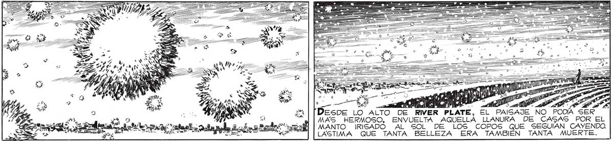
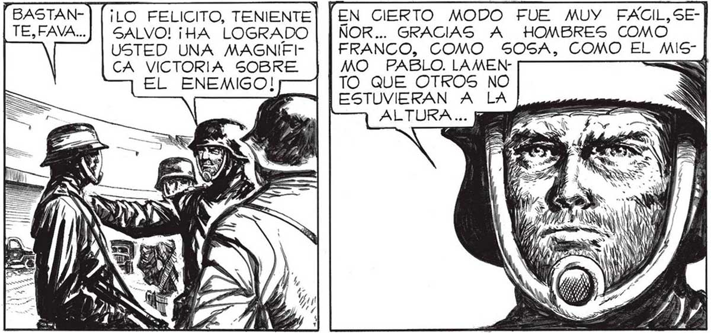

Ss Hee POR ALLA, EN AQUELLA "DIREC ON QUEDA CA¿QUÉ SERA De MARTITA, QUÉ SERA DE SO, ¡LO FELICITO, TENIENTE| SALVO! ¡HA LOGRADO USTED UNA MAGNIEICA VICTORIA SOBRE EL ENEMIGO! pl lr otero bo dde cados Ruido DE PASOS APRESURADOS ME APARTO DE LA NOSTALGIA. TENIENTE... HAY ORDEN DE VIGILAR CON GRAN ATENCION TODOS LOS ACCESOS. "EN CIERTO MODO FUE MUY FAÁCIL,SEÑOR... GRACIAS A HOMBRES COMO FRANCO, COMO SOSA, COMO EL MISMO PABLO. LAMENTO QUE OTROS NO ESTUVIERAN A LA ALTURA... LA MUERTE, ME COMO ATURDIDO, CUENTA, DE PRONBÍA EXPUESTO 109 9 ATL ña y eqasn bl so > dd Dese LO ALTO DE RIVER LATE, EL PAISAJE NO PODÍA SER MAS HERMOSO, ENVUELTA AQUELLA LLANURA DE CASAS POR EL MANTO MIRISADO AL SOL DE LOS COPOS QUE SEGUIAN CAYENDO. LASTIMA QUE TANTA BELLEZA ERA TAMBIÉN TANTA MUERTE. ..CON ALGÚN LANZARRAYOS YO HUBIERA SIDO LA PRIMERA VICTIMA. BAJÉ A LA CANCHA. VENIMOS A MONTAR GUARDIA, EL RECIENTE COM- ¡BIENVENIDO, JUAN! PAREBATE CONTRA LOS CE QUE SE PELEO DURO. NVASORES, AL VER TAN DE CERCA A HABÍA. DEJADO EMBOTADO. ME DI TO, QUÉ ME HACON INCREÍBLE NCONS CIENCIA: Sl LOS 'CASCARUDOS” [$4 CONTRAATACABAN.. |... ES COMPRENSIBLE, TENIENTE: SON HOMBRES POCO FOGUEADOS. PERO VOLVAMOS A LO QUE DISCUTÍAMOS ANTES. ¿POR QUÉ DECÍA USTED, PROFESOR FAVALLI, QUE A PESAR DE HABER LOGRADO YA DOS VICTORIAS, NO DEBEMOS SER OPTIMISTAS ? GENCILLO, MAYOR... HASTA AHORA LOS VERDADEROS INVASORES NO SE HAN OCUPADO DE NOSOTROS: LOS “CASCARUDOS” SON APENAS ALGO MAS QUE SUS PERROS DE PRESA,MAS O MENOS ENTRENADOS PARA LA PELEA, PERO NADA MAS.

